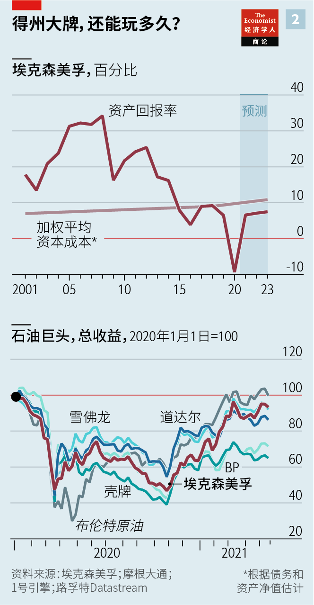

2021-06-06T16:18:40+00:00
The little Engine that could
小“引擎”做到了
小“引擎”做到了
ExxonMobil loses a proxy fight with green investors
代理权之争，埃克森美孚输给环保投资者
代理權之爭，埃克森美孚輸給環保投資者
An activist hedge fund succeeds in nominating at least two climate-friendly directors to the energy giant’s board
一支维权对冲基金成功提名至少两名重视气候问题的候选人加入了这家能源巨头的董事会
一支維權對沖基金成功提名至少兩名重視氣候問題的候選人加入了這家能源巨頭的董事會

“THE STONE AGE did not end for lack of stone, and the oil age will end long before the world runs out of petroleum.” That battle cry animates critics of Big Oil, who dream of phasing out hydrocarbons in favour of cleaner fuels and technologies. Their bête noire is ExxonMobil, long the richest and mightiest of Western oil supermajors—and the most unrepentant in its defence of crude. Lee Raymond, a formidable former boss of the Texan titan, once told your correspondent to get out of his office after being challenged over his flagrant denial of climate science.
“石器时代的终结不是因为石头不够了，石油时代的终结也远不用等到世界上石油耗尽的那一天。”这句口号鼓舞着石油巨头的批评者，他们梦想着逐步淘汰碳氢化合物，转而采用更清洁的燃料和技术。埃克森美孚（ExxonMobil）是他们的眼中钉。长期以来，这家公司在西方石油巨头中最有钱有势，同时也最执迷不悟地为原油辩护。笔者曾采访过这家得克萨斯巨头凶悍的前老板李·雷蒙德（Lee Raymond），在质疑他对气候科学的公然否定后，被他赶出了办公室。
“石器時代的終結不是因為石頭不夠了，石油時代的終結也遠不用等到世界上石油耗盡的那一天。”這句口號鼓舞着石油巨頭的批評者，他們夢想着逐步淘汰碳氫化合物，轉而採用更清潔的燃料和技術。埃克森美孚（ExxonMobil）是他們的眼中釘。長期以來，這家公司在西方石油巨頭中最有錢有勢，同時也最執迷不悟地為原油辯護。筆者曾採訪過這家得克薩斯巨頭兇悍的前老闆李·雷蒙德（Lee Raymond），在質疑他對氣候科學的公然否定後，被他趕出了辦公室。
Darren Woods, who currently does Mr Raymond’s old job, does not deny that climate change is real. And he must now contend with the biggest rebuke to the firm’s management in living memory. At his company’s shareholder meeting on May 26th a coalition of activist investors led by Engine No.1, a small hedge fund, managed to put at least two green-tinged directors on the board to promote a lower-carbon strategy of the sort espoused by European supermajors such as BP, Royal Dutch Shell and Total. As The Economist went to press the fate of a third activist nominee had yet to be determined.
达伦·伍兹（Darren Woods）如今坐在雷蒙德昔日的位置上，他并不否认气候变化确实存在。而他现在必须应对这家公司的管理层所遭遇的抨击——人们记忆中最严重的一次。在5月26日的公司股东大会上，由小型对冲基金“1号引擎”（Engine No.1）领导的维权投资者联盟成功让至少两名倾向于环保的人士进入董事会，以推行BP、荷兰皇家壳牌（Royal Dutch Shell）和道达尔（Total）等欧洲石油巨头都在支持的低碳战略。在本刊付印之际，他们提名的第三个人是否当选尚未揭晓。
達倫·伍茲（Darren Woods）如今坐在雷蒙德昔日的位置上，他並不否認氣候變化確實存在。而他現在必須應對這家公司的管理層所遭遇的抨擊——人們記憶中最嚴重的一次。在5月26日的公司股東大會上，由小型對沖基金“1號引擎”（Engine No.1）領導的維權投資者聯盟成功讓至少兩名傾向於環保的人士進入董事會，以推行BP、荷蘭皇家殼牌（Royal Dutch Shell）和道達爾（Total）等歐洲石油巨頭都在支持的低碳戰略。在本刊付印之際，他們提名的第三個人是否當選尚未揭曉。
Engine No.1 didn’t quite get its way: it had put forward four candidates. But as David Larcker of Stanford’s Graduate School of Business observes, it is “extremely rare” for a company the size of ExxonMobil to elect even one dissident director, let alone two or three. Even one dissenting voice can make a big difference, says Charles Elson, a corporate-governance expert at the University of Delaware who has served as a courteous rebel on various boards. The result is thus an unprecedented attack on ExxonMobil’s carbon-addiction, which is greater than any other supermajor’s (see chart 1).
1号引擎也不算大获全胜：它推举了四名候选人。但正如斯坦福大学商学院的戴维·拉克尔（David Larcker）所说，像埃克森美孚这样规模的公司能选出一名持异议的董事都“极其罕见”，更别说两名或三名了。特拉华大学的公司治理专家查尔斯·埃尔森（Charles Elson）也担任过多家公司的董事，总是在董事会上礼貌地提出反对意见。他说，即便只有一个人反对，也会产生重大影响。结果就是埃克森美孚比其他所有石油巨头都更严重的“碳瘾”遭到了前所未有的打击（见图表1）。
1號引擎也不算大獲全勝：它推舉了四名候選人。但正如斯坦福大學商學院的戴維·拉克爾（David Larcker）所說，像埃克森美孚這樣規模的公司能選出一名持異議的董事都“極其罕見”，更別說兩名或三名了。特拉華大學的公司治理專家查爾斯·埃爾森（Charles Elson）也擔任過多家公司的董事，總是在董事會上禮貌地提出反對意見。他說，即便只有一個人反對，也會產生重大影響。結果就是埃克森美孚比其他所有石油巨頭都更嚴重的“碳癮”遭到了前所未有的打擊（見圖表1）。
The campaign succeeded thanks to the backing of powerful allies. CalPERS and CalSTRS, pension funds representing, respectively, California’s public employees and its teachers, have between them over $700bn in assets under management. Two giant funds representing New York’s state and city employees, with another $300bn or so in assets, joined them in supporting Engine No.1’s effort. Together they hold less than 1% of ExxonMobil’s shares. But as large asset managers, their actions sent a strong signal to the broader market.
这次行动能成功有赖强大盟友的支持。分别代表加州公职人员和教师的加州公务员退休基金（CalPERS）和加州教师退休基金（CalSTRS）管理的资产共计超过7000亿美元。分别代表纽约州和纽约市雇员的另外两家大型基金管理着大约3000亿美元的总资产。它们都加入了支持1号引擎的行列。尽管这四家基金持有的埃克森美孚股份加起来不到1%，但作为大型资产管理公司，它们的行动向更广泛的市场发出了一个强烈的信号。
這次行動能成功有賴強大盟友的支持。分別代表加州公職人員和教師的加州公務員退休基金（CalPERS）和加州教師退休基金（CalSTRS）管理的資產共計超過7000億美元。分別代表紐約州和紐約市僱員的另外兩家大型基金管理着大約3000億美元的總資產。它們都加入了支持1號引擎的行列。儘管這四家基金持有的埃克森美孚股份加起來不到1%，但作為大型資產管理公司，它們的行動向更廣泛的市場發出了一個強烈的信號。
The market received it. Institutional Shareholder Services (ISS) and Glass Lewis, a proxy-advisory duopoly which counsels investors on such matters, recommended the election of three and two of Engine No.1’s directors, respectively. In a report published on May 14th ISS declared that the hedge fund “made a compelling case that additional board change is needed to provide shareholders with sufficient confidence” in ExxonMobil’s prospects. The majority of shareholders agreed, almost certainly including some big asset managers.
市场收到了信号。为投资者提供持股公司投票建议的股东投票顾问双寡头——机构股东服务公司（Institutional Shareholder Services，简称ISS）和Glass Lewis——分别建议选出三名和两名由1号引擎提名的候选人。ISS在5月14日发布的一份报告中宣称，1号引擎“提出了令人信服的理由，认为董事会需要更进一步重组，好让股东有足够的信心”相信埃克森美孚的前景。对此大多数股东都表示赞成，几乎可以肯定其中包括一些大型资产管理公司。
市場收到了信號。為投資者提供持股公司投票建議的股東投票顧問雙寡頭——機構股東服務公司（Institutional Shareholder Services，簡稱ISS）和Glass Lewis——分別建議選出三名和兩名由1號引擎提名的候選人。ISS在5月14日發布的一份報告中宣稱，1號引擎“提出了令人信服的理由，認為董事會需要更進一步重組，好讓股東有足夠的信心”相信埃克森美孚的前景。對此大多數股東都表示贊成，幾乎可以肯定其中包括一些大型資產管理公司。
The vote itself was as odd as the result. ExxonMobil’s management refused to announce the results, which should already have been tabulated, at the scheduled hour, instead declaring a recess “to ensure all of our shareholders have the opportunity to express their views”. This unusual move fuelled rumours that the firm was trying to persuade large institutional investors to reverse votes cast for the dissident directors, especially those with the greenest profiles. If true, that would be a departure from ExxonMobil’s habitually strong corporate governance.
投票过程和投票结果一样不同寻常。获选名单本已出炉，但埃克森美孚的管理层拒绝在预定时间公布结果，而是宣布休会，“以确保我们所有的股东都有机会表达自己的观点”。这一异常举动导致传言四起，称埃克森美孚正试图说服大型机构投资者撤销之前给异见董事们的投票，尤其是那些环保立场最鲜明的董事。如果真是这样，那就有违埃克森美孚一贯强大的公司治理了。
投票過程和投票結果一樣不同尋常。獲選名單本已出爐，但埃克森美孚的管理層拒絕在預定時間公布結果，而是宣布休會，“以確保我們所有的股東都有機會表達自己的觀點”。這一異常舉動導致傳言四起，稱埃克森美孚正試圖說服大型機構投資者撤銷之前給異見董事們的投票，尤其是那些環保立場最鮮明的董事。如果真是這樣，那就有違埃克森美孚一貫強大的公司治理了。
Whatever actually went on during the unscheduled break, the result was still a bombshell. When the meeting resumed, the firm announced that two of Engine No.1 candidates, Gregory Goff and Kaisa Hietala, had been elected. It said it needed more time to determine whether a third, Alexander Karsner, would join them.
无论在这段计划外休会期间到底发生了什么，结果仍然令人震惊。当会议重新开始时，埃克森美孚宣布，1号引擎提名的两位候选人格雷戈里·戈夫（Gregory Goff）和凯萨·希塔拉（Kaisa Hietala）已经当选。它表示还需要更多时间来决定第三位候选人亚历山大·卡斯纳（Alexander Karsner）是否会进入董事会。
無論在這段計劃外休會期間到底發生了什麼，結果仍然令人震驚。當會議重新開始時，埃克森美孚宣布，1號引擎提名的兩位候選人格雷戈里·戈夫（Gregory Goff）和凱薩·希塔拉（Kaisa Hietala）已經當選。它表示還需要更多時間來決定第三位候選人亞歷山大·卡斯納（Alexander Karsner）是否會進入董事會。
ExxonMobil’s proxy defeat is the latest sign that outside pressure for the oil business to embrace the transition to a low-carbon future is mounting. On May 18th the International Energy Agency (IEA), an international forecaster not known for alarmism, warned that investments in all new fossil-fuel projects must stop now if the global energy sector is to achieve carbon neutrality by 2050. President Joe Biden wants America’s power sector to stop adding greenhouse gases to the atmosphere 15 years earlier than that.
埃克森美孚在代理权上的失利是一个最新的迹象，显示要求石油业向低碳未来转型的外部压力正在加大。5月18日，并不惯于危言耸听的国际预测机构国际能源署（IEA）警告称，如果全球能源行业要在2050年前实现碳中和，那么现在就必须停止对化石燃料项目的所有新投资。美国总统拜登希望美国电力行业能提前在2035年就停止向大气排放温室气体。
埃克森美孚在代理權上的失利是一個最新的跡象，顯示要求石油業向低碳未來轉型的外部壓力正在加大。5月18日，並不慣於危言聳聽的國際預測機構國際能源署（IEA）警告稱，如果全球能源行業要在2050年前實現碳中和，那麼現在就必須停止對化石燃料項目的所有新投資。美國總統拜登希望美國電力行業能提前在2035年就停止向大氣排放溫室氣體。
So far it has been Europe’s oil giants that were pushed harder to go greener—by activists, consumers, regulators, investors and courts. Last year BP vowed to slash the carbon intensity of the products it sells by 50% in the next 30 years. Last month Shell won shareholder approval for its plan to create a carbon-neutral business by mid-century, including emissions from the fuel burned by end-users. Though ambitious by industry standards, this was not enough for a judge in the Netherlands, who on May 26th ordered the Anglo-Dutch giant to cut emissions between 2019 and 2030 by 45%, in keeping with global climate accords; Shell is expected to appeal.
迄今为止，欧洲石油巨头受到的压力更大——维权人士、消费者、监管机构、投资者和法院都逼迫它们加大环保力度。去年，BP誓言在未来30年内将所销售产品的碳强度削减50%。壳牌计划在本世纪中叶实现碳中和——这将把终端用户使用其燃料产生的排放也计算在内，该计划在5月获股东通过。虽然从行业标准来看这一目标已经够雄心勃勃了，但在荷兰的一个法官看来还不够，他在5月26日责令这家英荷巨头到2030年将碳排放降至较2019年减少45%，以符合全球气候协议。预期壳牌将会上诉。
迄今為止，歐洲石油巨頭受到的壓力更大——維權人士、消費者、監管機構、投資者和法院都逼迫它們加大環保力度。去年，BP誓言在未來30年內將所銷售產品的碳強度削減50%。殼牌計劃在本世紀中葉實現碳中和——這將把終端用戶使用其燃料產生的排放也計算在內，該計劃在5月獲股東通過。雖然從行業標準來看這一目標已經夠雄心勃勃了，但在荷蘭的一個法官看來還不夠，他在5月26日責令這家英荷巨頭到2030年將碳排放降至較2019年減少45%，以符合全球氣候協議。預期殼牌將會上訴。
Now carbon-bashing is spreading beyond tree-hugging Europe. Earlier this year activist badgering had already prompted ExxonMobil to unveil plans for a new “low carbon solutions” division, which will develop technologies to capture carbon and store it underground. It has also pledged to cut the carbon intensity of its own exploration and production operations by 15-20% by 2025. The same day as the ExxonMobil vote, shareholders of Chevron, its American rival similarly bullish on oil, voted for a proposal to reduce emissions from the end use of its products.
现在，打击排放的行动正从拥抱树木的欧洲向其他地方蔓延。在维权人士锲而不舍的推动下，今年早些时候埃克森美孚宣布了成立“低碳解决方案”新部门的计划，将开发碳捕集和地下封存技术。它还承诺到2025年把自己勘探和生产经营的碳强度降低15%至20%。就在埃克森美孚投票的当天，它的美国竞争对手、同样力挺石油的雪佛龙（Chevron）的股东投票支持了一项提案，要求减少其产品在最终使用时产生的碳排放。
現在，打擊排放的行動正從擁抱樹木的歐洲向其他地方蔓延。在維權人士鍥而不捨的推動下，今年早些時候埃克森美孚宣布了成立“低碳解決方案”新部門的計劃，將開發碳捕集和地下封存技術。它還承諾到2025年把自己勘探和生產經營的碳強度降低15%至20%。就在埃克森美孚投票的當天，它的美國競爭對手、同樣力挺石油的雪佛龍（Chevron）的股東投票支持了一項提案，要求減少其產品在最終使用時產生的碳排放。
ExxonMobil’s new directors will now push for more aggressive emissions cuts. Engine No.1 points to the firm’s plans to spend merely $3bn or so in total over the next five years on its low-carbon effort, compared with around $20bn a year on dirtier traditional investments. Unlike Shell, the company has promised only to reduce emissions from its own operations, not the vastly greater ones produced when its products are used by consumers.
埃克森美孚的新任董事们接下来将推动更大幅度的减排。1号引擎指出，埃克森美孚在未来五年对低碳业务的总计划支出只有30亿美元左右，而它每年在重污染的传统投资上的支出大约在200亿美元。与壳牌不同的是，埃克森美孚只承诺减少自身运营带来的排放，而不包括消费者使用其产品时产生的排放——这一部分要大得多。
埃克森美孚的新任董事們接下來將推動更大幅度的減排。1號引擎指出，埃克森美孚在未來五年對低碳業務的總計劃支出只有30億美元左右，而它每年在重污染的傳統投資上的支出大約在200億美元。與殼牌不同的是，埃克森美孚只承諾減少自身運營帶來的排放，而不包括消費者使用其產品時產生的排放——這一部分要大得多。
The big reason such arguments no longer fall on deaf ears is ExxonMobil’s once mighty reputation for being tightly run has slipped. Indiscipline has replaced historically prudent capital spending. The firm has torched billions in shareholder value in the past few years. The most eye-popping chart in Engine No.1’s 80-page manifesto shows its return on capital languishing at or well below its weighted-average cost of capital since 2015 (see chart 2).
这样的反对声音不再被置若罔闻的一个重要原因是，埃克森美孚原本管理严格的盛名已经不再。过去在资本支出上的审慎已被无纪律取代。过去几年里，埃克森美孚已经烧掉了数十亿美元的股东价值。在1号引擎80页的声明中，一张最令人瞠目的图表显示，自2015年以来，埃克森美孚的资本回报率只是勉强跟上或远低于其加权平均资本成本（见图表2）。
這樣的反對聲音不再被置若罔聞的一個重要原因是，埃克森美孚原本管理嚴格的盛名已經不再。過去在資本支出上的審慎已被無紀律取代。過去幾年裡，埃克森美孚已經燒掉了數十億美元的股東價值。在1號引擎80頁的聲明中，一張最令人瞠目的圖表顯示，自2015年以來，埃克森美孚的資本回報率只是勉強跟上或遠低於其加權平均資本成本（見圖表2）。
Whereas Chevron spent less than $70bn on capital expenditure in total over the past five years, ExxonMobil splurged nearly $100bn, even as oil prices swooned. Its net debt has nearly doubled since 2015 to over $60bn. A mistimed and overpriced acquisition of XTO Energy, a gas firm, led it in November to write off $17bn-20bn—and S&P Global, a rating agency, to entitle a scathing analysis of the incident “How not to do M&A”. “Board refreshment is necessary due to the long-term financial underperformance at ExxonMobil,” says Anne Simpson of CalPERS.
雪佛龙过去五年的资本支出总额不到700亿美元，而埃克森美孚在油价低迷的情况下还挥霍了近1000亿美元。自2015年以来，它的净债务几乎翻了一番，达到600多亿美元。对天然气公司XTO Energy不合时宜且价格过高的收购让埃克森美孚在去年11月做了170亿至200亿美元的减计。评级机构标普全球（S&P Global）就此事做了一番犀利的分析，题为《如此并购要不得》（How not to do M&A）。“鉴于埃克森美孚的财务业绩表现长期不佳，重组董事会很有必要。”CalPERS的安妮·辛普森（Anne Simpson）表示。
雪佛龍過去五年的資本支出總額不到700億美元，而埃克森美孚在油價低迷的情況下還揮霍了近1000億美元。自2015年以來，它的凈債務幾乎翻了一番，達到600多億美元。對天然氣公司XTO Energy不合時宜且價格過高的收購讓埃克森美孚在去年11月做了170億至200億美元的減計。評級機構標普全球（S&P Global）就此事做了一番犀利的分析，題為《如此併購要不得》（How not to do M&A）。“鑒於埃克森美孚的財務業績表現長期不佳，重組董事會很有必要。”CalPERS的安妮·辛普森（Anne Simpson）表示。
Last summer, as ExxonMobil’s share price headed to a two-decade low and the company was knocked out of the Dow Jones Industrial Average after nearly a century in the blue-chip index, Ms Simpson’s argument would have sounded incontrovertible. To many it remains compelling. But deep down many investors may still worry that the green shift will destroy shareholder value. Thanks to dearer oil ExxonMobil has clawed back $110bn in market capitalisation since October, handily besting the European giants whose promised wind and solar projects are years away from profitability and could meanwhile eat into their dividends.
去年夏天，埃克森美孚的股价跌至20年来的低点，公司也在入选道琼斯工业平均指数成分股近一个世纪后被剔除出这一蓝筹股指数，辛普森发表的观点在那时听起来应该无可争议。对许多人来说它现在也仍然令人信服。但在内心深处，许多投资者可能仍然担心向绿色能源的转型将损害股东价值。油价回升后，埃克森美孚自去年10月以来已经挽回了1100亿美元的市值，轻松击败了欧洲各大石油巨头，后者承诺的风能和太阳能项目要盈利还要等待多年，同时可能损耗它们的股息。
去年夏天，埃克森美孚的股價跌至20年來的低點，公司也在入選道瓊斯工業平均指數成分股近一個世紀後被剔除出這一藍籌股指數，辛普森發表的觀點在那時聽起來應該無可爭議。對許多人來說它現在也仍然令人信服。但在內心深處，許多投資者可能仍然擔心向綠色能源的轉型將損害股東價值。油價回升後，埃克森美孚自去年10月以來已經挽回了1100億美元的市值，輕鬆擊敗了歐洲各大石油巨頭，後者承諾的風能和太陽能項目要盈利還要等待多年，同時可能損耗它們的股息。
Crude prices are, of course, cyclical by nature. They will fall again at some point, in contrast to the carbon dioxide relentlessly accumulating in the air as more oil is burned. Mainstream investors now view climate risk as “a core component of long-term value”, notes Timothy Youmans of EOS, which offers stewardship services to owners of $1.5trn in assets and supports Engine No.1. Last week’s shareholder battle is proof of that. Mr Woods and his successors should brace for more such fights. ■
当然，原油价格本身具有周期性，到了某个时刻又会再次下跌。与之形成对照的是，随着更多石油被燃烧，二氧化碳则是源源不断地在大气中累积。主流投资者现在将气候风险视为“长期价值的核心组成部分”，EOS的蒂莫西·尤曼斯（Timothy Youmans）指出。同样支持1号引擎的EOS目前为总共1.5万亿美元资产的所有者们提供管理服务。埃克森美孚的股东之争证明了尤曼斯的观点。伍兹和他的继任者应该准备好迎接更多这样的争斗。
當然，原油價格本身具有周期性，到了某個時刻又會再次下跌。與之形成對照的是，隨着更多石油被燃燒，二氧化碳則是源源不斷地在大氣中累積。主流投資者現在將氣候風險視為“長期價值的核心組成部分”，EOS的蒂莫西·尤曼斯（Timothy Youmans）指出。同樣支持1號引擎的EOS目前為總共1.5萬億美元資產的所有者們提供管理服務。埃克森美孚的股東之爭證明了尤曼斯的觀點。伍茲和他的繼任者應該準備好迎接更多這樣的爭鬥。